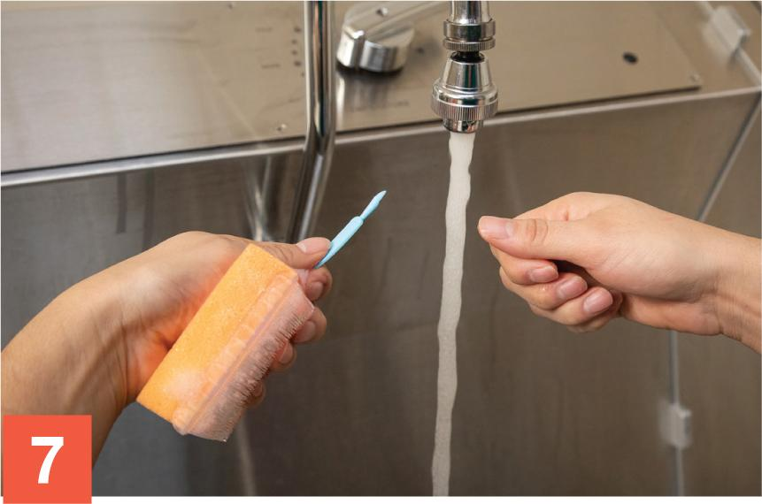
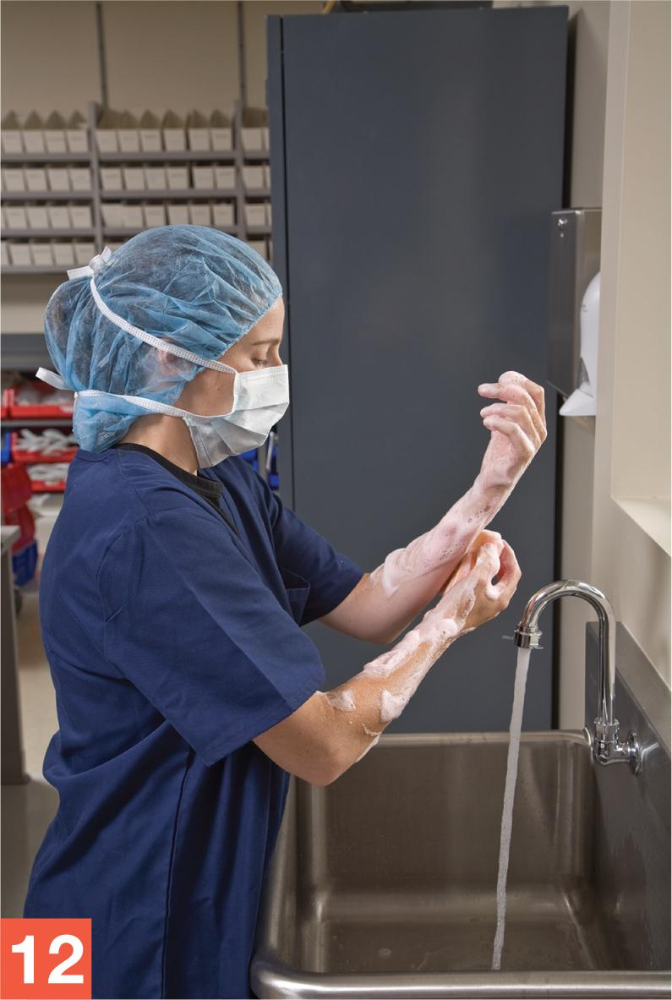
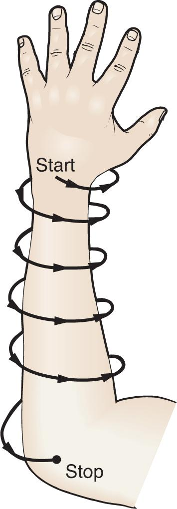

Part 2: Training
8.7 Procedural Lab
This lab walks you through the step-by-step actions that you must follow for hand hygiene and garbing. Take your time. Work through each step methodically and with close attention to detail.
Essential Supplies
To complete the Unit 2 procedural labs, you will need to ensure that various essential anteroom and buffer room supplies such as those listed in Table 8.1 are available for your use.
| Anteroom Supplies |
|---|
|
Procedure
Take a careful, deliberate approach to each detailed step of this procedural lab. In practice, using this approach helps minimize the potential for contamination of a CSP. Refer to instructor directions or facility SOPs to determine whether googles are required for this procedure and to determine whether sterile gloves are to be donned in the anteroom or buffer room.
Garbing
- Remove any outer garments and jewelry and, if you have long hair, pull back your hair with a binder.
Note: You should already be free of make-up, nail polish or artificial nails, and similar adornments and dressed in a scrub uniform prior to attempting this procedural lab. Refer to direction from your instructor regarding the sanitizing of hands prior to and between each step in the garbing process. Although these sanitizing procedures are not included in the procedural lab, it is considered a best practice; therefore, your instructor may direct you to do so.
- As you step over the line of demarcation from the dirty side of the anteroom to the clean side of the anteroom, don your first shoe cover on the clean side of the anteroom. To do so, slip the longer end over the toe of the shoe. Pull the cover around the bottom of the shoe and onto the heel. The cover should completely envelop the shoe. Do not allow your shoe cover to touch the dirty side of the anteroom, and do not allow your shoe to directly touch the clean side of the anteroom in this process.
- Pull the second shoe cover over your uncovered shoe by following the same process as step 2.
- Place the bouffant-style cap or head cover over your head so that most of the hair is at the back. Position the back elastic against the back of your neck. Pull the front of the cap over your head until the cap covers all the skin on your forehead. Tuck any loose hair under the cap so that all hair is covered. In addition, be sure that your ears are completely covered by the cap. Use a second cap as needed.
- Don a face mask. Place the top of the mask on the bridge of the nose and gently pinch the thin aluminum strip woven into the top of the mask. This action prevents the mask from riding up into your field of vision. Tie the upper ties behind the head, just above your ears. Tie the lower ties behind the neck. Position the mask securely over the nose, mouth, and chin. If appropriate, don a facial hair cover. Ensure that all facial hair is covered. If the face mask has ear loops instead of ties, lift up the head cover and secure the ear loops over the ears. Then pull the head cover down over the ears.
George Brainard/© Paradigm Education Solutions
Handwashing
- Proceed to the sink and prepare for handwashing. Before opening the prepackaged, sterile, surgical scrub sponge/brush, squeeze the packet several times to activate the soapsuds. Then open the packet, carefully remove the nail cleaner and hold it in your hand. Either hold the surgical scrub sponge/brush in your hand while you clean your nails or temporarily set it aside. Activate the automatic sensor or press the foot/knee pedals to begin the flow of water. If the sink does not have an automatic sensor or foot/knee pedals, turn the faucet on and allow it to run throughout the entire hand-washing process. Allow the water to run until it is warm.
- Rinse your hands and forearms. Use the nail cleaner to clean under each of your fingernails while holding the nail under running water. When you have finished, discard the nail cleaner into the waste container.

George Brainard/© Paradigm Education Solutions
- Remove the surgical scrub sponge/brush and hold it in one hand while you use the other hand to discard the packaging. Apply a small amount of water to the scrub sponge/brush. Using a gentle pumping motion, squeeze the scrub sponge/brush and use only a small amount of water. This technique helps to prevent too much soap from being wasted down the drain. Squeeze and dampen as needed so that you have a good soapy lather throughout the entire procedure.
- Using the sponge side of the tool, clean each of the four surfaces (top, side, bottom, side) of the thumb of the one hand. Clean the webbing between the thumb and forefinger. Next, clean all four surfaces of the forefinger. Continue cleaning the remaining fingers sequentially, cleaning the webbing in between each finger before moving on to the next finger. Repeat the cleaning pattern on the thumb and fingers of the other hand.
- After cleaning the thumb and fingers of each hand, clean the palms of each hand.
- After cleaning the palms, clean the back of each hand with the sponge.
- Next, clean one forearm by moving the sponge gradually and in a circular pattern around the arm, proceeding from the wrist up to the elbow (see Figure 8.1). Then clean the other forearm using the same technique.

George Brainard/© Paradigm Education Solutions
FIGURE 8.1 With your fingers pointing up, clean the forearm by starting at the wrist, working around the forearm in a circular pattern, and ending at the elbow. © Paradigm Education Solutions
- Having completed the hand-washing process, dispose of the surgical scrub sponge/brush without touching the waste container or its contents.
- Activate the sensor or foot/knee pedals on the sink so that you have a nice flow of warm water. Rinse your hand and forearm, holding your arm with fingertips pointing up so you rinse the fingers first and the water runs down toward the elbow. Then rinse the other hand and forearm.
George Brainard/© Paradigm Education Solutions
- Using a low-lint, disposable towel or wiper, dry both hands and then discard the used towel or wiper into the waste container. Using a towel or wiper, dry each forearm, moving toward the elbow. Keep your fingers pointing up throughout the drying procedure. When finished drying, discard the towels or wipers into the waste container. If the sink does not have an automatic sensor or foot/knee pedals, turn off the faucet by using a handheld, disposable towel or wiper.
Donning a Gown and Gloves
- Don the gown, making sure it does not touch a contaminated surface, such as the floor. Insert one arm into the open sleeve and then pull it up onto the shoulder. Insert the other arm into the other sleeve and pull the gown up to the neck. Secure the neck closure of the gown at the nape. Wrap the waist ties around your body and tie them in back.
- Remove the outer wrapper of a packet of sterile gloves and discard the wrapper into the waste container. Place the inner packet on a clean surface, such as a table or countertop that has been recently cleaned and disinfected. Apply an alcohol-based hand rub to all surfaces of your hands and allow these surfaces to dry thoroughly.
- Open the inner glove packet. Do not touch the outer surface of the sterile gloves with anything except another sterile glove during the donning process. Note that the gloves are labeled “left” and “right.” Place the glove on the first hand by grasping the exposed, folded-up part of the cuff with your other hand and carefully pulling the glove onto your hand. Leave the cuff folded up and don the second glove by sliding the fingers of the gloved hand inside the folded cuff of the second glove. Pull the glove over your ungloved hand and then continue to slide your fingers up to turn the cuff right side out, thus positioning the cuff of the glove over the wrist and lower sleeve of the gown. Do not let the outer surface of the sterile gloves touch the gown. Using your other hand, slide your fingers inside the folded cuff of the first hand and then slide your fingers up to turn the cuff right side out, thus positioning the cuff of the glove over the wrist and lower sleeve of the gown. After both gloves are donned, wipe the surfaces of the gloves with sterile 70% IPA.
George Brainard/© Paradigm Education Solutions
Removal of Garb upon Leaving the Anteroom
- Remove one glove by grasping the cuff and pulling it down and off the hand. The glove should now be inside out. Continue holding this glove in the hand that remains gloved. Grasp the cuff of the glove on the other hand and pull it off of the hand. One glove is now inside the other glove. Discard this glove bundle into the waste container.
- Untie the strings of the gown and then remove the gown by pulling it off at the shoulders. As you pull it toward the fingers, the gown turns inside out. Discard your disposable gown into a waste container, or place your reusable gown into a designated laundry container outside the anteroom. Reusable gowns will be picked up and taken to the hospital’s laundry facility for cleaning.
- Remove your face mask, head cover, and shoe covers, in that order. Discard these items into the waste container.
- After removing garb, wash your hands with soap and water. Handwashing will remove any residue from the compounding process that may have inadvertently transferred to your hands.